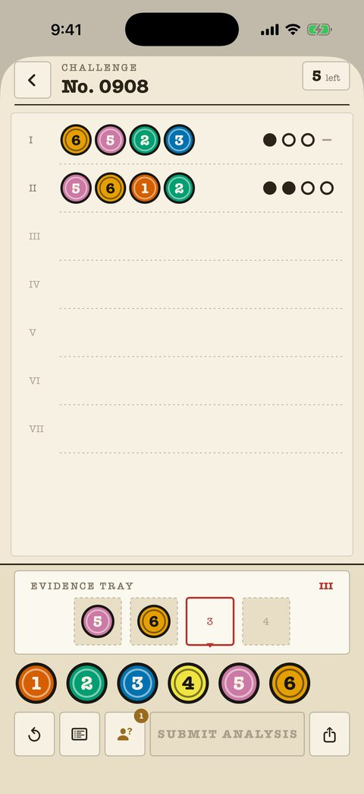

Classic cases
240 cases from beginner to master, each a numbered sheet in the file. The attempt counter sits top-right; the marks are pure ink — dot, ring, dash — so they never depend on color.
- Every past analysis stays on the sheet for cross-referencing.
- Notes on the board mark eliminated and confirmed colors.
- A Shape Marks setting gives every color its own outline.
- First 40 cases are free.